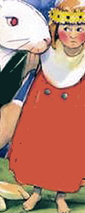

The rabbit's bride

There was once a woman who lived with her daughter in a beautiful cabbage-garden;
and there came a rabbit and ate up all the cabbages. At last said the woman to her daughter,
"Go into the garden, and drive out the rabbit." - "Shoo! shoo!" said the maiden;
"don't eat up all our cabbages, little rabbit!" - "Come, maiden," said the rabbit,
"sit on my tail and go with me to my rabbit-hutch." But the maiden would not. Another day,
back came the rabbit, and ate away at the cabbages, until the woman said to her daughter,
"Go into the garden, and drive away the rabbit." - "Shoo! shoo!" said the maiden;
"don't eat up all our cabbages, little rabbit!" - "Come, maiden," said the rabbit,
"sit on my tail and go with me to my rabbit-hutch." But the maiden would not. Again,
a third time back came the rabbit, and ate away at the cabbages,
until the woman said to her daughter, "Go into the garden, and drive away the rabbit.
" - "Shoo! shoo!" said the maiden; "don't eat up all our cabbages, little rabbit!
" - "Come, maiden," said the rabbit, "sit on my tail and go with me to my rabbit-hutch.
" And then the girl seated herself on the rabbit's tail,
and the rabbit took her to his hutch. "Now," said he,
"set to work and cook some bran and cabbage; I am going to bid the wedding guests.
" And soon they were all collected. Would you like to know who they were? Well,
I can only tell you what was told to me; all the hares came,
and the crow who was to be the parson to marry them,
and the fox for the clerk, and the altar was under the rainbow.
But the maiden was sad, because she was so lonely. "Get up! get up!
" said the rabbit, "the wedding folk are all merry.
" But the bride wept and said nothing, and the rabbit went away,
but very soon came back again. "Get up! get up!" said he,
"the wedding folk are waiting." But the bride said nothing,
and the rabbit went away. Then she made a figure of straw,
and dressed it in her own clothes, and gave it a red mouth,
and set it to watch the kettle of bran,
and then she went home to her mother.
Back again came the rabbit, saying, "Get up! get up!"
and he went up and hit the straw figure on the head,
so that it tumbled down.
And the rabbit thought that he had killed his bride,
and he went away and was very sad.